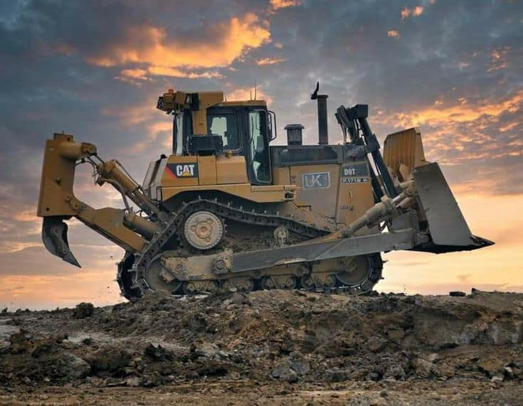
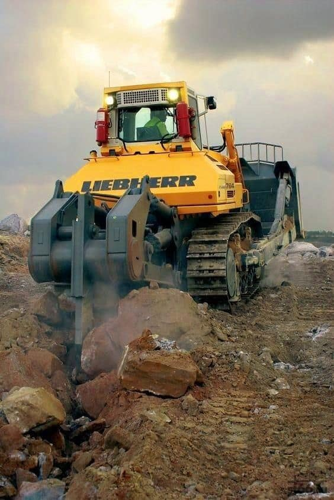
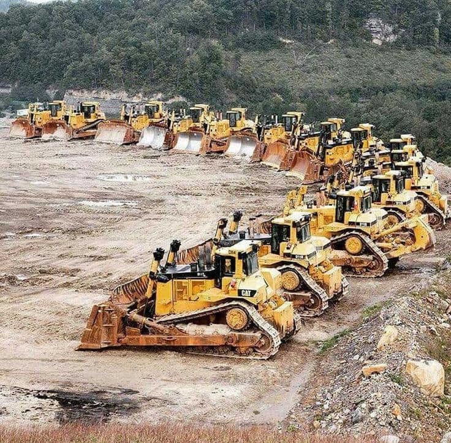
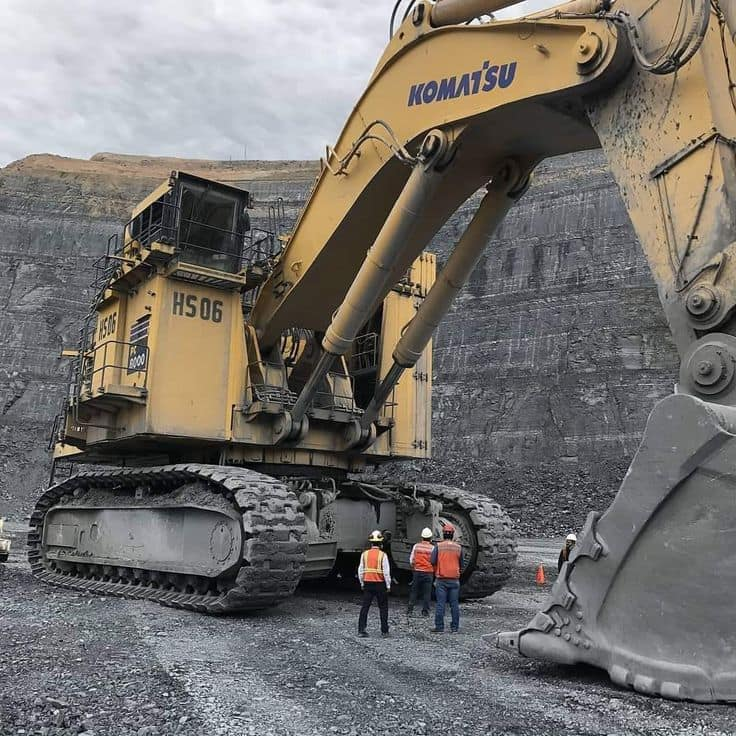
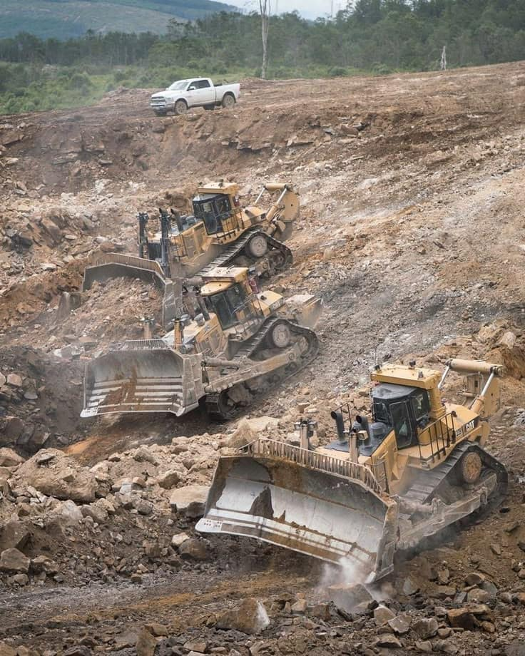

Análisis de aceite
Toma de muestras del aceite de motor, del sistema hidráulico o de las transmisiones para su análisis. Los resultados ayudan a identificar desgaste interno, contaminación o degradación del lubricante.
Servicio técnico móvil multimarca
Localizamos y resolvemos averías electrónicas, eléctricas y de software en maquinaria de construcción, obra pública, canteras y minería. Siempre que es posible, nos desplazamos hasta la máquina para evitar traslados innecesarios.

Servicios
Nuestra actividad se centra en el diagnóstico y en los sistemas electrónicos, eléctricos y de software de la máquina, con intervenciones en el lugar de trabajo siempre que sea posible.
Localización del origen de la avería mediante revisión técnica, lectura de códigos de fallo y comprobación de los sistemas implicados, antes de sustituir piezas.
Revisión de unidades de control, sensores, actuadores y su cableado. Comprobación de señales y de la comunicación entre componentes.
Arranque, carga, alimentación, iluminación, mazos de cables, conectores y protecciones. Búsqueda de cortocircuitos, derivaciones y falsos contactos.
Consulta de parámetros y registros de la máquina, y configuración o actualización del software cuando se dispone de las herramientas y la documentación adecuadas para ese equipo.
Reparaciones mecánicas sencillas en el lugar de trabajo. Cuando la avería exige desmontajes importantes o instalaciones de taller, coordinamos la reparación con un taller especializado.

Multimarca. Atendemos maquinaria de distintos fabricantes. Antes de cada intervención confirmamos si disponemos de los medios adecuados para ese modelo concreto.

Mantenimiento preventivo
Un plan de mantenimiento preventivo multimarca para identificar a tiempo los indicios de desgaste o mal funcionamiento, antes de que se conviertan en una avería importante.
Toma de muestras del aceite de motor, del sistema hidráulico o de las transmisiones para su análisis. Los resultados ayudan a identificar desgaste interno, contaminación o degradación del lubricante.
Seguimiento periódico del estado de la máquina: códigos de fallo registrados, parámetros de funcionamiento y evolución de los resultados de cada análisis.
Un mismo criterio de seguimiento para máquinas de distintos fabricantes, adaptado a las horas de trabajo y a las condiciones de cada obra o explotación.
Cómo trabajamos
Nos cuentas qué máquina es, dónde está y qué le ocurre. Cuantos más datos aportes (marca, modelo, síntomas, códigos de fallo), mejor.
Analizamos la información, te pedimos lo que falte y te indicamos si la intervención puede hacerse en el lugar de trabajo y qué incluye.
Siempre que sea posible, acudimos al lugar donde trabaja la máquina con los equipos de diagnóstico necesarios.
Diagnosticamos y reparamos in situ. Si la reparación necesita un taller, la coordinamos con un taller especializado y te explicamos el diagnóstico realizado.

Pendiente de estudio
Servicio no disponible Todavía no se ofrece
Estamos evaluando la posibilidad de ofrecer en el futuro un servicio de reprogramación de maquinaria pesada orientado a optimizar el consumo de combustible. Este servicio todavía no se ofrece y, por ahora, no aceptamos encargos de este tipo.
Antes de decidir si lo incorporamos, necesitamos estudiar, entre otros aspectos:
No publicaremos cifras de ahorro ni resultados mientras no dispongamos de mediciones verificadas.

Contacto
Describe la máquina y la incidencia. Con esa información podremos valorar si la intervención es posible en el lugar de trabajo.